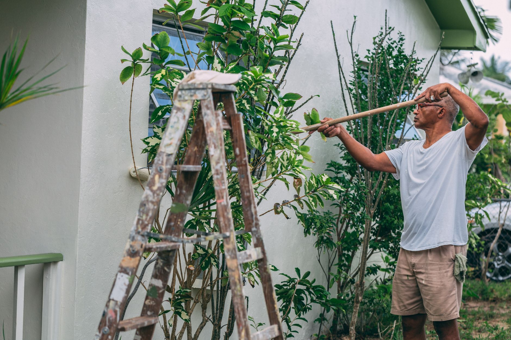

Service area · Bridgeview, IL
Owner run house painting in Bridgeview, IL.
Painting and remodeling for Bridgeview, IL: what we do, what it usually takes on a house around here, and how soon somebody can come and look at it.

Your house in Bridgeview, and what we would do with it
Bridgeview runs to 1970s construction. Brick or brick fronted, with the wood that actually needs painting up on the gables, the soffit and the fascia. It also means the parts that fail first are the parts nobody looks at. On a Bridgeview exterior the brick is usually fine and the wood above it is not.
The work we get called out to in Bridgeview is interior painting, exterior painting and cabinet refinishing. We are based here, on 7900 W. 83rd St., so the village is not a place we drive out to.
Answered before you have to ask
- Can we do your job? Almost certainly. In Bridgeview it is interior painting and exterior painting most weeks, plus the drywall, plaster and carpentry that goes underneath both.
- What will it cost? There is no price list on this site, because there is no honest local one to publish yet. Every job is quoted after we walk it. What moves the number on a Bridgeview house is the ladder plan. Two Bridgeview exteriors with the same square footage price differently depending on how the ground sits under them and what has to be reached from where.
- What usually needs doing first? Usually the soffit, fascia and gable ends. They fail years before the brick underneath them needs anything.
- When can you come? The shop is in Bridgeview itself, so there is no travel to price at all. Faster than anywhere else on this site, and it shows most on small work: a single wall or one bad ceiling is worth a look on its own here rather than being bundled into something bigger next month.
How to get this looked at
Say the room and roughly what you want on 708-935-4289. Every Bridgeview job is quoted after we have stood in it, never off a website.
This is the town the shop is in
7900 W. 83rd St., Bridgeview. It is a working address, not a franchise office in another county and not a service-area pin dropped on a map, and it is the reason a small repair in the village is worth looking at the same week rather than being bundled into next month. Every other page on this site measures its distance from this one place.
Being based here does not make the housing simple. More of Bridgeview is manufactured housing than any other place on this site, and that is a genuinely different job from a site-built house: different substrate, different primer, different price. Ask any contractor quoting you here which of the two they are pricing. The share, the median build year and the pre-1980 figure behind that are all further down this page.
What houses in Bridgeview usually need
Interior painting in Bridgeview
4,079 owner households and a median 5.1 rooms: interiors are the steadiest work in Bridgeview and the easiest to get quoted vaguely.
Exterior painting in Bridgeview
Exteriors on 1975-median housing fail at the top first, and 49.8 percent of Bridgeview is detached, so there is a lot of top.
Cabinet refinishing in Bridgeview
At 5.1 median rooms the kitchen is the room that decides how the house feels, and refinishing changes it without moving a cabinet.
Drywall and repair in Bridgeview
Repair comes before paint on 43.1 percent pre-1970 stock, and in Bridgeview that is most of it.
Remodeling and trades in Bridgeview
On 1975-median housing the thing behind the paint is usually the thing that actually needs doing, and in Bridgeview that is trim, subfloor and tile.
What we look at before we price the work
A 1975 median puts most of Bridgeview in ranch, raised ranch and split-level shapes, and those have a specific exterior problem: a lot of wood in high places. Soffit, fascia, gable ends and the trim over a split entry all sit above reach and all fail first, while the brick below them is fine. The elevations that need pricing carefully are the ones nobody looks at. 4,079 households own in Bridgeview and 2,146 rent, which produces two different phone calls. One wants the house to look right for ten years. The other wants a unit clean and let by the first of the month. Both are real work and neither should be quoted like the other.
What an estimate here has to account for
- No travel line at all. The shop is in Bridgeview. Nothing on a quote here is covering a drive, which is worth checking against any other number you are given for the same work.
- Containment, not just paint. 56.2 percent of housing in Bridgeview was built before 1980, so on most addresses here the lead-safe setup and the cleanup are part of the job and part of the hours.
- Setup does not shrink with the room. The median unit here is 5.1 rooms. Masking, cutting in and cleanup cost the same in a small room as a large one, so a flat per-room rate is usually wrong in one direction or the other.
- Not all of it is site built. 16.1 percent of housing here is manufactured. Different substrate, different primer, different price, and it should be said out loud rather than discovered on the day.
What the housing here is likely made of
Most of it is 1970s ranch, raised ranch and split-level, usually brick or brick front with frame gables, and a lot of the exterior wood in Bridgeview sitting high.
It is read off exactly two things: the 1975 median build year, and the split between 49.8 percent detached houses, 4.7 percent attached homes and 29.3 percent in buildings of two units or more.
That is inference and it is labeled as one. Wall material in Bridgeview is not collected by any source behind this page, so there is no honest figure to put on it. Look at your own house and you will know more than this paragraph does.
Old paint in Bridgeview, and how it has to be handled
If your house in Bridgeview is the usual 1970s vintage, there is very likely old paint under whatever is on the walls now, and old paint can be leaded. Nobody has to leave a Bridgeview house unpainted over it. It does mean the sanding, the sealing off and the cleanup are part of the job rather than an extra.
Read it as a method rather than a prohibition. Below roughly six square feet of disturbed paint in a room, or twenty outside, it does not bite. Above that, and on any window replacement in Bridgeview at all, it decides how the room is sealed and how it is left. On 5.1-room housing that threshold arrives early.
None of it is graded at the town line. The rule attaches to a build year and to the work being done, so the number worth checking is the one on your own deed in Bridgeview.
Of the 6,818 housing units counted in Bridgeview, 56.2 percent went up before 1980. There is no pre-1978 bucket, so 1980 is the nearest line the Census draws for Bridgeview. The federal Renovation, Repair and Painting rule applies to work that disturbs paint in housing built before 1978, and in Illinois the EPA administers it directly rather than through a state program.
None of that is a reason to leave a Bridgeview house unpainted. It is a reason to know what the setup looks like before anyone opens a sander, and to hear it from the person doing the work rather than from a website.
Nothing on this page should be read as a certification claim. The slot for it below is empty because it has not been supplied, and an empty slot is more use to a homeowner in Bridgeview than a filled-in one nobody checked.
Scheduling, and how far Bridgeview really is
There is no distance to quote for Bridgeview. The shop is on 7900 W. 83rd St., inside the village, and every other page on this site measures itself against this address.
For scale, the nearest other place on this site is Justice, 1.4 miles from Bridgeview, and Bridgeview sits in Cook County.
Which mostly matters for the jobs that are too small to travel for. A repair that is worth doing gets looked at here instead of being folded into something bigger next month.
Where these figures come from
The working behind everything above, with the source named at the bottom.
- Median build year1975
- Built before 198056.2%
- Built before 197043.1%
- Owner households4,079
- Renter households2,146
- Owner occupied65.5%
- Median home value$234,000
- Median rooms5.1
- Detached houses49.8%
- In buildings of 2+29.3%
- Straight-line from the shopin town
Take the 6,818 housing units in Bridgeview and 56.2 percent of them are older than 1980, with a median build year of 1975. 5.3 percent go back to 1939 or earlier. On stock that age the prep is the job and the paint is the easy part.
Owner households here number 4,079 and renter households 2,146, a 65.5 percent owner-occupied place. The stock behind those households is 49.8 percent detached, 4.7 percent attached and 29.3 percent multi-unit, at a median of 5.1 rooms. The Census puts the median home value at $234,000.
Manufactured housing is 16.1 percent of the stock in Bridgeview, which is a different structure and a different job from a site-built house. It is also why the median value here is not comparable to the town next door.
Set against the other places covered here, Bridgeview is furthest from the middle on three things: prewar housing at 5.3 percent against a 15.8 percent average, townhomes and rowhouses at 4.7 percent against a 7.5 percent average and housing built before 1970 at 43.1 percent against a 56.9 percent average.
Source: U.S. Census Bureau, American Community Survey 5-year estimates, 2019-2023 (tables B25003, B25024, B25034, B25035, B25077). Every dollar figure on this page is a published Census estimate of what homes in the area are worth. None of it is a price for work.
The next town over is not the same job
Bridgeview and Justice are 1.4 miles apart and are quoted differently, which is the whole argument for reading a page about your own town rather than a page about the region. They part company on prewar share (5.3 percent against 1.3 percent); owner households (4,079 against 2,475); share of units in buildings of two or more (29.3 percent against 49.1 percent).
From the shop
The shop is here, at 7900 W. 83rd St. Nobody in the Bridgeview map pack is actually based in Bridgeview: the three companies holding it are run out of Justice, Burbank and Brookfield. Being ten minutes away is not a marketing line here, it is why a small repair is worth looking at the same week instead of being bundled into next month. Bridgeview is also the one place on this list where manufactured housing is a real share of the stock at 16.1 percent, which nobody competing here has noticed and which is a different structure and a different job from a site-built house.
Nearby, and genuinely nearby
Inside 2.6 miles of Bridgeview there are four other places covered here: Justice, Hickory Hills, Burbank, Bedford Park. Each of them reads differently, because each of them was built differently.
Before you get anything quoted
Interior Painting: How to Tell Good Prep From a Fast Cheap Job
Relevant here because 56.2 percent of Bridgeview was built before 1980, and on stock that age prep is most of the labor and most of the difference between two quotes.
What Interior Painting Costs in the Southwest Suburbs, and What Actually Changes the Price
Relevant here because 4,079 owner households at a median of 5.1 rooms is a lot of trim, and trim is the part of an interior price that moves.
Questions
Asked about Bridgeview
Who actually shows up in Bridgeview?
Mike Walsh owns the company, walks the job and stays on it while our crew works. Call 708-935-4289. It is worth saying because on a job this size the gap between whoever measured it and whoever turns up is where most of the disappointment comes from.
Can it be done a room at a time?
It can. Splitting a 5.1-room house into phases is normal and it is priced as phases rather than as a discount on the whole. The trade-off is setup time, because masking and protecting a room costs the same whether it is one room or the fourth.
What changes the price most on a house here?
The state of the trim and the ceilings. Wall area is predictable, and with 5.1 median rooms and a 1975 median build year in Bridgeview the woodwork is where the hours actually go. Ask for it as its own line and the differences between two quotes stop being mysterious.
Is a smaller place cheaper to paint per room?
Not proportionally, no. The median unit in Bridgeview is 5.1 rooms, and a small room still needs the same masking, the same cutting in and the same cleanup as a large one. What falls is the roller time, which is the cheapest part of the day. Anyone quoting a flat per-room rate on small rooms is either guessing high or about to be disappointed.
What is confirmed, and what is not
- InsuranceTo supply
- Local registrationTo supply
- Workmanship guaranteeTo supply
- Lead-safe certificationTo supply
Ready when you are
Give us a call and we will come and look at it.
Tell us your town and what you want done, and we will set a time to come and see it. You get a real number once somebody has stood in the room, not a guess over the phone. Mike Walsh owns the company and runs the crew, so you are talking to the person responsible for the work.
708-935-4289